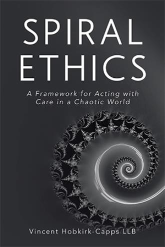

Graduate management trainee at Swindon Borough Council. Independently publishing on AI governance, gender healthcare ethics, neurodiversity/SEND reform, moral universalism, human complexity, worship & stewardship through Kantian, Islamic, and lived-experience lenses.
Advocating cautious, humane institutional practice that protects vulnerability without coercion or reductionism.

A framework for acting with care in a chaotic world.
Many ethical frameworks assume ideal conditions: clarity, stability, and unlimited cognitive or institutional capacity. Real life rarely offers such conditions. Spiral Ethics begins from a different premise. It asks what ethical action looks like when individuals and institutions are fatigued, constrained, operating under sustained pressure; and irreversible consequences cannot be avoided by indiviudals or institutions alike.
Rather than presenting a catalogue of rules or prescribing outcomes, the book approaches ethics as a process of long-term alignment to coherent principles, with practical guides to help ensure this.